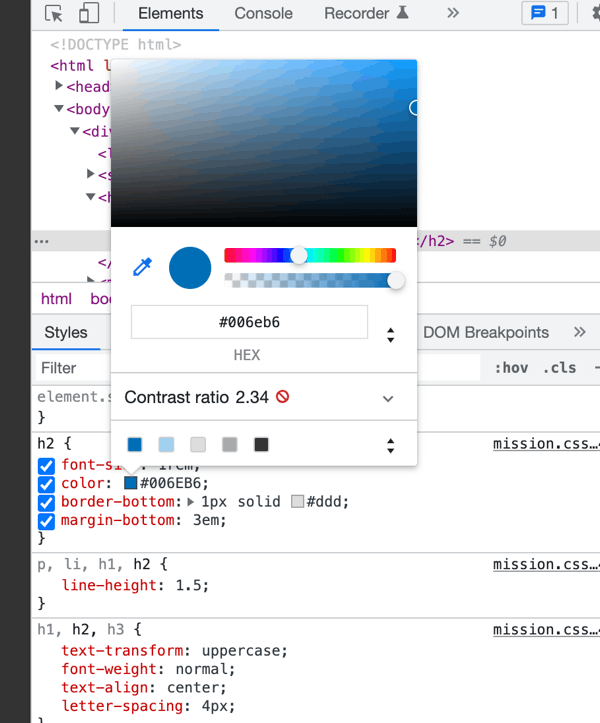

WEB Fundamentals
WDD 130
Web formatting: Mission Statement part 2
Activity Instructions
Estimated Time: 60 minutes
This week we will continue working with the Mission statement page we created last week. We will add some Javascript to allow a user to choose a light or dark theme for the page. We created the light theme last week, we will also need to add the CSS for the dark theme now.
-
Organizing our thoughts.
Let's begin by creating a list of steps again to solve the problem at hand.
-
Add a
selectelement to our page with two options: light, dark. Make sure that the light option is first so it comes up by default. - Add a class to
bodycalled "dark" -
Define a rule in the CSS with the
.darkselector to make all the changes necessary to convert our design to the dark theme. -
After getting the dark theme done remove the
darkclass from thebodyelement. -
Create a JS file called mission.js and add a
scriptelement to our HTML file to link them together. -
With JavaScript select the
selectelement out of the DOM. - Add an event listener to the selected element. We should listen for a change event.
-
Create a function called
changeThemethat will get called by the event listener when the select option is changed. That function should do the following:- Check to see what option is currently selected on our theme selector.
-
If it is "dark" then add the
darkclass to body and change the logo src to the white logo. -
If it is not "dark" then remove the
darkclass from the body element and change the image src for the logo to the blue logo.
That is a pretty good list. Let's get started.
-
Add a
-
Modify the HTML
A dropdown list is a great way to offer a user a limited list of choices. In HTML we create a dropdown with a select element.
Add a
selectelement to the top of your HTML page. It should have two options: light and dark. Use those for both the value and the display of the option. You will probably need to review the link above for help with the syntax.Add the class of
darkto thebodyelement. We do this now for development purposes. We will remove it once we have our dark theme working and add it back in with Javascript later when needed. -
Style the dark theme.
we will start the dark theme with the following changes: set the background color to #333, a nice dark grey. Then set the font color to white.
Take a look at the page with those changes. What do you notice? The subtitle we made blue last week. The blue on black is a little hard to read. This could actually be an accessibility issue. Making a site accessible mean that we do everything we can to make it work for everyone, including people who make have some sort of disability like vision issues.
Accessibility guidelines recommend that the contrast between colors be at least 4 for smaller text. We can easily check this in Chrome or Firefox. These instructions will assume you are using Chrome.
Open the Developer tools (right-click anywhere on the page and choose "Inspect"
In the "Elements" tab find the
h2element that holds our subtitle and click on it. This will show us the CSS that is being applied to that element. Find the rule that chages the color to blue. You should see a little blue color swatch next to the hexadecimal value. Click on the color swatch.You will see a color picker pop up. One of the bits of information on it is the current foreground/background contrast of colors. Ours is currently 2.34. That is too low! We need a new blue color with better contrast. Many organizations have branding style guides to help establish a brand. BYUI is no exception. You can find their branding guide here. Notice there is a colors section. Go check it out.
You can see that the main blue color is "#006EB6". It also lists several more colors below that can be used for accent. Try the different blues in the list to find one with a good contrast. Add a new rule that will change the blue color on the H2 to your lighter blue when the dark theme is set. If you get stuck check out the partial solution below. (Remember that we can write complex selectors to say things like: "Find an H2 that is inside of an element that has a class of "dark")
Partial solution
.dark h2 { color: somecolor; }The last thing that we need to look at is the logo. It is the same blue that the subtitle was, and so has the same contrast issues. If we look at another part of the branding guide we can see the rules for using the BYUI logo. Notice that when the logo is used on a dark background they recommend white text. Below you will find a new image with white text.

We won't change the image right now, but will do it later with Javascript...but you should grab that image and save it as part of your project.
Once you have the dark theme looking how you would like then remove the
darkclass from thebody -
Write the Javascript
Create a file called mission.js in the mission folder. Add a
scriptelement to our HTML to link up these two files. Remember todeferyour script!If we review the list of steps above we can see the following is left:
-
With JavaScript select the
selectelement out of the DOM. - Add an event listener to the selected element. We should listen for a change event.
-
Create a function called
changeThemethat will get called by the event listener when the select option is changed. That function should do the following:- Check to see what option is currently selected on our theme selector.
-
If it is "dark" then add the
darkclass to body and change the logo src to the white logo. -
If it is not "dark" then remove the
darkclass from the body element and change the image src for the logo to the blue logo.
To help you out, below you will find a function that has been started with comments. Use this and complete the task
const themeSelector = // replace with code to select dropdown element out of the HTML function changeTheme() { //check to see what the current value of our select is. The current value is conveniently found in themeSelector.value! // if the value is dark then: // add the dark class to the body // change the source of the logo to point to the white logo. // otherwise // remove the dark class // make sure the logo src is the blue logo. } // add eventlistener to the themeSelector element here. Use the changeTheme function as the event handler function. -
With JavaScript select the
-
Commit and push your work.
Commit your changes, then push them to GitHub. Wait a few minutes then check to make sure they show on Github pages. If you need a review on how to do this check out github instructions. Start around step 3.
After verifying that your page updated, submit the URL to your page in Ilearn. The URL will look something like this: https://githubusername.github.io/wdd130/mission. Make sure to replace "githubusername" with YOUR actual github username :)